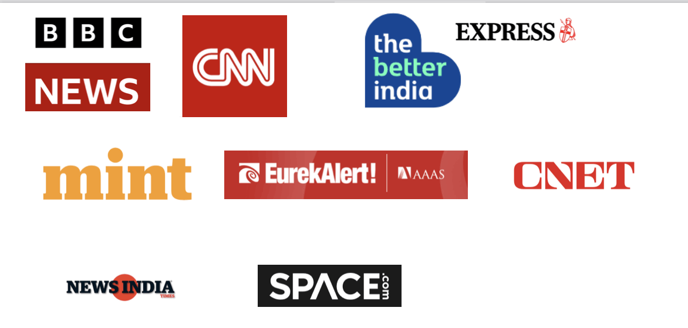

Home
Research
Publications
In the News
SPANDAK
Teaching & Mentoring
About Me
Press Conference, American Astronomical Society, Washington DC, 2018
CBS News
I was interview by the local KPIX CBS SF Bay Area News station for our discovery of FRB 121102 at the highest radio frequency.
News coverage of my work

BBC News: Light shed on mystery space radio pulses
CNET: Mysterious signal from deep space goes hyperactive
CNN: What’s sending mysterious repeating fast radio bursts in space?
NEWS India:
Indian American scientist may have discovered extraterrestrial activity through Breakthrough Listen
The better India: This Indian Scientist is Working in a $100m Project, Searching for Aliens!
SPACE.com:
$100 Million E.T. Hunt Spots 21 Mysterious Light Flashes
EXPRESS:
Proof of aliens? Stephen Hawking mission detects mysterious signals from another galaxy
MINT:
Breakthrough Listen: The truth is out there
EurekAlert AAAS:
Artificial intelligence helps track down mysterious cosmic radio bursts
SPACE.com:
Mysterious Radio Blasts from a Distant Galaxy Draw Attention of Alien Hunters
NEWS India: Indian American scientist may have discovered extraterrestrial activity through Breakthrough Listen
Set up a
website
with Mobirise